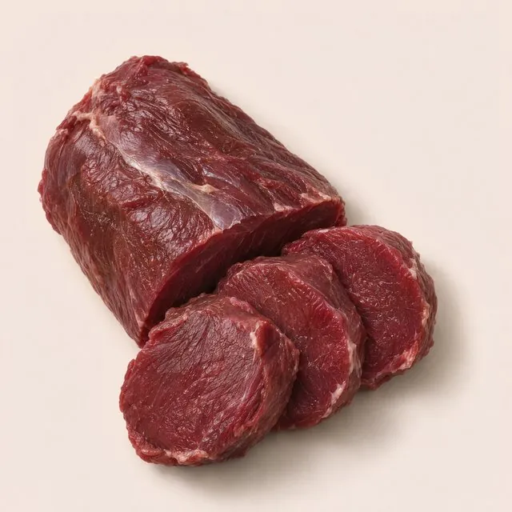

Čerstvé mäso, sušené mäso, mäsová múčka: aký je rozdiel na etikete?
Krátka odpoveď
Čerstvé, sušené mäso a mäsová múčka sa líšia hlavne obsahom vody. Surové mäso má podľa USDA asi 67–75 % vody, múčka pod 10 %. Zloženie granúl sa radí podľa hmotnosti surovín pri miešaní, preto čerstvé mäso býva prvé, hoci po sušení z neho ostane asi štvrtina až tretina. Kvalita múčky kolíše podľa suroviny a spracovania.
Kľúčové body
- Surové chudé jahňacie má 74,1 % vody, v 100 g je len 25,9 g sušiny (USDA FoodData Central)
- Zloženie sa podľa nariadenia (ES) č. 767/2009 radí zostupne podľa hmotnosti, sušená surovina sa váži v sušenom stave
- Psy strávili aminokyseliny z krmív s rôznymi múčkami v priemere na 62 až 82 % (Johnson a kol., 1998)
- Kódex FEDIAF dovoľuje slovo „čerstvé“ len pre surovinu, ktorá okrem chladenia neprešla žiadnou úpravou
- Najčastejší omyl: „čerstvé mäso na prvom mieste“ ešte neznamená, že granule majú najviac mäsa
Čo je čerstvé mäso, sušené mäso a mäsová múčka?
Mäso v granulách pre psov je živočíšna surovina, ktorá sa do zmesi pridáva v troch formách: ako čerstvé mäso, sušené mäso alebo mäsová múčka, každá s iným obsahom vody. Všetky tri formy dodávajú hlavne bielkoviny a tuk, no na etikete ich nájdeš na inom mieste a s inými percentami.
- Čerstvé mäso je surovina, ktorá okrem chladenia neprešla žiadnou úpravou. Kódex správneho označovania FEDIAF (2019) slovo „čerstvé“ vylučuje po varení, sušení, mrazení, hydrolýze alebo pridaní konzervantov.
- Sušené (dehydrované) mäso je mäso, z ktorého sa odstránila voda. Kódex FEDIAF vyžaduje, aby názov suroviny jasne povedal, že je sušená, napríklad slovom „sušené“.
- Mäsová múčka je koncentrát vyrobený kafilerickým spracovaním (renderingom): surovina sa varí, oddelí sa tuk a zvyšok sa vysuší a pomelie. Podľa Tufts Petfoodology (2016) má múčka menej ako 10 % vody.
Slovo „mäso“ má v kódexe FEDIAF úzky význam, kostrový sval. Širšia zákonná kategória „mäso a živočíšne vedľajšie produkty“ zahŕňa všetky mäsité časti a produkty zo spracovania tiel teplokrvných suchozemských zvierat.
Prečo je čerstvé mäso v zložení granúl často na prvom mieste?
Čerstvé mäso býva na prvom mieste, lebo zloženie sa radí podľa hmotnosti surovín vrátane vody, ktorú čerstvé mäso obsahuje. Nariadenie (ES) č. 767/2009, článok 17, vyžaduje zoznam kŕmnych surovín pod nadpisom „zloženie“ v zostupnom poradí podľa hmotnosti.
Kódex FEDIAF (2019) to vysvetľuje ako princíp „miešacej misy“. Rozhoduje hmotnosť suroviny v okamihu, keď vstupuje do zmesi. Sušená alebo koncentrovaná surovina sa uvádza hmotnosťou v sušenom stave a musí mať v názve slovo ako „sušené“, „prášok“ alebo „múčka“.
Surové mäso je pritom väčšinou voda. Podľa databázy USDA FoodData Central má surové chudé jahňacie stehno 74,1 % vody. Surové morčacie prsia majú 74,9 % vody a surové mleté hovädzie 67,1 % vody. Kódex FEDIAF počíta pri živočíšnych surovinách orientačne so 75 % vody.
Pri výrobe granúl sa väčšina tejto vody odparí. Čerstvé mäso teda môže viesť zoznam, hoci v hotovej granule z neho zostane len zlomok hmotnosti. Klinickí nutriční špecialisti z Tufts Petfoodology (2016) uvádzajú príklad: krmivo s kuracím mäsom (70 % vody) na prvom mieste môže obsahovať menej kuracieho ako krmivo s kuracou múčkou na druhom alebo treťom mieste.
Tím z Tufts upozorňuje aj na opačný trik. Niektorí výrobcovia pridajú práve toľko čerstvého mäsa, aby sa dostalo na prvé miesto. Prvé miesto v zložení preto hovorí o hmotnosti pri miešaní, nie o tom, koľko mäsa je v miske tvojho psa.
| Surovina (obsah vody) | g sušiny |
|---|---|
| Surové morčacie prsia (74,9 % vody) | 25,1 g sušiny |
| Surové chudé jahňacie (74,1 % vody) | 25,9 g sušiny |
| Surové mleté hovädzie (67,1 % vody) | 32,9 g sušiny |
| Mäsová múčka (10 % vody) | 90 g sušiny |
Zdroj: Výpočet 100 g − voda; voda v surovom mäse podľa USDA FoodData Central (SR Legacy), voda v múčke pod 10 % podľa Tufts Petfoodology 2016 (počítané s 10 %)
Koľko mäsa ostane z „70 % mäsa“ po sušení?
Ak výrobca pridá 70 % čerstvého mäsa, po vysušení tvorí mäso v našom ilustračnom výpočte len asi 39 % sušiny granúl. Pri 70 % sušeného mäsa by to bolo asi 70 %. Rovnaké číslo na obale teda môže znamenať veľmi rozdielne množstvo mäsa.
Výpočet je ilustrácia, nie zloženie konkrétneho krmiva. Vstupy: čerstvé mäso so 75 % vody (orientačná hodnota kódexu FEDIAF, 2019), ostatné suroviny a sušené mäso s 10 % vody a hotové granule s 8 % vody.
| Krok | 70 kg čerstvého mäsa | 70 kg sušeného mäsa |
|---|---|---|
| Sušina z mäsa | 70 × 0,25 = 17,5 kg | 70 × 0,90 = 63 kg |
| Sušina z ostatných 30 kg surovín | 30 × 0,90 = 27 kg | 30 × 0,90 = 27 kg |
| Sušina spolu | 44,5 kg | 90 kg |
| Granule s 8 % vody | asi 48 kg | asi 98 kg |
| Podiel mäsa v sušine | 17,5 : 44,5 = 39 % | 63 : 90 = 70 % |
Zo 100 kg zmesi s čerstvým mäsom vznikne asi 48 kg granúl, lebo väčšina vody sa odparí. Na obale napriek tomu môže byť správne napísané „70 % čerstvého mäsa“. Údaj platí pre surovinu v miešacej mise, nie pre hotové granule.
Kódex FEDIAF dovoľuje aj opačný prepočet. Sušenú surovinu, z ktorej sa odstránila iba voda, smie výrobca prepočítať na „čerstvý ekvivalent“, ak uvedie aj skutočné množstvo sušenej suroviny. Mäsové múčky sú z tohto prepočtu výslovne vylúčené.
Prakticky: percento mäsa porovnávaj len pri rovnakej forme. Čerstvé s čerstvým, sušené so sušeným. Ak výrobca formu neuvádza, nevieš, čo číslo znamená.
| Forma pridaného mäsa | % sušiny |
|---|---|
| 70 % čerstvého mäsa | 39 % sušiny |
| 70 % sušeného mäsa | 70 % sušiny |
Zdroj: Ilustračný výpočet; voda v čerstvom mäse 75 % podľa kódexu FEDIAF 2019, ostatné suroviny a sušené mäso 10 % vody (predpoklad)
Je mäsová múčka horšia ako čerstvé mäso?
Mäsová múčka nie je automaticky zlá, ale jej kvalita kolíše viac ako pri čerstvom mäse a z etikety ju nespoznáš. Rozhoduje, z akých častí zvierat múčka vznikla a pri akej teplote sa spracovala.
V EÚ sa do krmív pre psov smie použiť len materiál kategórie 3 podľa nariadenia (ES) č. 1069/2009. Patria sem časti zvierat vhodné na ľudskú spotrebu, ktoré sa na ňu z obchodných dôvodov nepoužijú. Patria sem aj časti bez príznakov choroby prenosnej na ľudí alebo zvieratá, napríklad krv, kože či nohy.
Zloženie múčok sa líši výrazne. Johnson a kol. (Journal of Animal Science, 1998) skúmali mäsokostné múčky s 24 alebo 34 % popola a hydinové múčky so 7 alebo 16 % popola. Popol je minerálny podiel, pri mäsokostnej múčke hlavne z kostí.
Psy v tej istej štúdii strávili aminokyseliny z krmív s rôznymi múčkami v priemere na 62 až 82 %. Vyšší popol stráviteľnosť konzistentne neznížil. Mäsokostná múčka spracovaná pri nižšej teplote bola stráviteľnejšia ako tá istá múčka pri vysokej teplote.
Cramer a kol. (Journal of Animal Science, 2007) porovnali surové lyofilizované suroviny s kafilerickými múčkami na kohútoch, nie na psoch. Surové suroviny mali stráviteľnosť aminokyselín 90,3 až 95,5 %, múčky 79,2 až 84,8 %. Jahňacia múčka mala najhoršiu kvalitu bielkovín zo všetkých.
Výsledky nie sú jednoznačné. Murray a kol. (1997) zistili, že kafilerické spracovanie hydiny mierne znížilo stráviteľnosť v tenkom čreve psov, pri hovädzom nie. Celková stráviteľnosť krmív s čerstvým mäsom a s múčkou bola podobná. Štúdie sú staršie a malé, preto ich ber ako smer, nie presné čísla pre konkrétne granule.
Čerstvé mäso vs. sušené mäso vs. múčka vs. vedľajšie produkty: porovnanie
Najväčší rozdiel medzi formami mäsa je v obsahu vody a v tom, ako presne etiketa hovorí, čo je vnútri.
| Kritérium | Čerstvé mäso | Sušené mäso | Mäsová múčka | Mäso a živočíšne vedľajšie produkty |
|---|---|---|---|---|
| Čo to je | surovina len chladená, bez inej úpravy | mäso, z ktorého sa odstránila voda | varená, odtučnená, vysušená a pomletá surovina | zákonná kategória, mäsité časti aj produkty zo spracovania tiel |
| Voda | asi 67–75 % (USDA) | nízka, výrobca ju na obale neuvádza | pod 10 % (Tufts, 2016) | rôzna |
| Poradie v zložení | vysoko kvôli vode | podľa hmotnosti v sušenom stave | podľa hmotnosti v sušenom stave | podľa súčtu hmotnosti kategórie |
| Ako vyzerá na etikete | „čerstvé kuracie mäso“ | „sušené jahňacie mäso“ | „hydinová múčka“, „mäsokostná múčka“ | „mäso a živočíšne vedľajšie produkty (z toho hovädzie 4 %)“ |
| Čo z etikety nevieš | koľko ostane po sušení | presný obsah vody | z akých častí a pri akej teplote vznikla | druh zvieraťa a podiel jednotlivých častí |
Verdikt: najviac informácií ti dá zloženie, ktoré pri každom mäse uvádza druh zvieraťa, formu a percento.
Kategória „mäso a živočíšne vedľajšie produkty“ je zákonná. Kódex FEDIAF ju pri zložení pre psov a mačky povoľuje namiesto jednotlivých názvov surovín. Vnútorné orgány ako pečeň, srdce či pľúca môžu byť výživné, problém je skôr v tom, že kategória neprezradí, čo presne obsahuje.
Čo znamená „čerstvo spracované mäso v sušenom stave“ v zložení Granuly?
Údaj „čerstvo spracované jahňacie mäso v sušenom stave 51 %“ znamená, že jahňacie mäso bolo pred sušením čerstvé a 51 % je jeho hmotnosť už po sušení. Tak to vyplýva z pravidla nariadenia (ES) č. 767/2009 a kódexu FEDIAF: sušená surovina sa v zložení uvádza hmotnosťou v sušenom stave.
Slovo „čerstvo spracované“ opisuje stav suroviny pred sušením. Samotné „čerstvé mäso“ podľa kódexu FEDIAF patrí len surovine, ktorá okrem chladenia neprešla žiadnou úpravou. Preto v zložení uvádzame obe informácie: z čoho sme vychádzali a v akej forme mäso do granúl ide.

Takto vyzerá mäsová časť zloženia našich granúl, doslova podľa obalu:
- Jahňa s batátmi & čučoriedkami: čerstvo spracované jahňacie mäso v sušenom stave 51 %.
- Jeleň & králik s batátmi: čerstvo spracované jelenie mäso v sušenom stave 35 %, čerstvo spracované králičie mäso v sušenom stave 15 %.
- Morka, hus & kačica s tekvicou: čerstvo spracované morčacie mäso v sušenom stave 25 %, sušené husacie mäso 15 %, sušené kačacie mäso 8 %, kuracia pečeň 3 %.
- Hovädzie s ryžou a Hovädzie, morka & jahňa s ryžou: hovädzie mäso v dvoch formách, sušené a čerstvo spracované, každá s vlastným percentom.
Každá mäsová zložka má v našom zložení pomenovaný druh zvieraťa a percento. Mäsovú múčku ani kategóriu „mäso a živočíšne vedľajšie produkty“ v zložení našich granúl nenájdeš.

Ako čítať mäso v zložení granúl: 5 krokov
Pri mäse v zložení granúl sleduj formu suroviny, druh zvieraťa a percento, nie iba to, čo je na prvom mieste.
- Zisti formu mäsa. Hľadaj slová „čerstvé“, „sušené“, „dehydrované“ alebo „múčka“. Podľa kódexu FEDIAF musí byť sušená surovina takto označená.
- Porovnávaj percentá len pri rovnakej forme. 30 % čerstvého mäsa obsahuje pri 75 % vode asi 7,5 % sušiny z mäsa, 30 % sušeného mäsa podstatne viac.
- Pozri sa, či je pomenovaný druh zvieraťa. „Sušené jahňacie mäso“ ti povie viac ako „mäso a živočíšne vedľajšie produkty“ alebo „hydinová múčka“.
- Sčítaj rozdelené suroviny len opatrne. Tufts Petfoodology (2016) upozorňuje, že suroviny z jedného zdroja bývajú rozdelené na viac položiek, napríklad mäso, tuk a múčku. Percentá rôznych foriem však nie sú to isté, preto ich nesčítavaj, ako keby boli.
- Porovnaj bielkoviny v sušine. Analytické zložky prepočítaj na sušinu: percento bielkovín vydeľ číslom (100 − vlhkosť) a vynásob 100. Pri 26 % bielkovín a 8 % vlhkosti vychádza 28,3 % bielkovín v sušine.
Rovnaký prepočet na sušinu použi aj pri porovnaní granúl s konzervou, ktorá má vody oveľa viac. Ak niečo na obale chýba, napríklad forma mäsa, opýtaj sa výrobcu. Tufts Petfoodology odporúča zisťovať informácie priamo od neho.
Časté otázky
Je dehydrované mäso to isté ako sušené mäso? Áno, oba výrazy znamenajú mäso, z ktorého sa odstránila voda. Kódex FEDIAF pripúšťa rôzne slová, ak jasne povedia, že surovina je sušená alebo koncentrovaná.
Je múčka v granulách vždy z odpadu? Nie, v EÚ smie ísť do krmív pre psov len materiál kategórie 3, teda časti zvierat bez príznakov choroby prenosnej na ľudí alebo zvieratá. Kvalita múčky však kolíše podľa použitých častí a teploty spracovania.
Má čerstvé mäso vyššiu výživovú hodnotu ako sušené? Na rovnakú hmotnosť nie, sušené mäso má viac bielkovín, lebo v ňom chýba voda. Rozhoduje kvalita suroviny a spracovanie, nie to, či do zmesi išla s vodou.
Prečo niektoré granule uvádzajú „čerstvý ekvivalent“? Kódex FEDIAF dovoľuje prepočítať sušenú surovinu na množstvo pred sušením, ak výrobca uvedie aj skutočné množstvo sušenej suroviny. Pre mäsové múčky takýto prepočet nie je povolený.
Dá sa z etikety zistiť presné množstvo mäsa v granule? Presne nie, lebo percentá platia pre suroviny pri miešaní a obsah vody v sušenom mäse sa na obale neuvádza. Odhad ti dá forma mäsa, percento a obsah bielkovín v sušine.
Zhrnutie
- Čerstvé mäso, sušené mäso a mäsová múčka sa líšia hlavne vodou: surové mäso má asi 67–75 % vody, múčka pod 10 %.
- Zloženie sa radí podľa hmotnosti pri miešaní, preto čerstvé mäso na prvom mieste nehovorí, koľko mäsa ostane v granule.
- Múčka nie je automaticky zlá, ale jej stráviteľnosť kolíše podľa suroviny a spracovania a z etikety ju nespoznáš.
- Najviac ti povie zloženie, ktoré pri každom mäse uvádza druh zvieraťa, formu a percento.
- Ďalší krok: vezmi obal granúl svojho psa, nájdi formu mäsa a bielkoviny prepočítaj na sušinu.
Zdroje
- Code of Good Labelling Practice for Pet Food – FEDIAF, 2019 – europeanpetfood.org/wp-content/uploads/2022/02/FEDIAF_labeli
- Nariadenie (ES) č. 767/2009 o uvádzaní na trh a používaní krmív, článok 17 (znenie pri prijatí) – legislation.gov.uk, 2009 – legislation.gov.uk/eur/2009/767/article/17/adopted
- Nariadenie (ES) č. 1069/2009 o vedľajších živočíšnych produktoch, článok 10: materiál kategórie 3 (znenie pri prijatí) – legislation.gov.uk, 2009 – legislation.gov.uk/eur/2009/1069/article/10/adopted
- Why you shouldn’t judge a pet food by its ingredient list – Tufts Petfoodology, Cummings School of Veterinary Medicine, 2016 – sites.tufts.edu/petfoodology/2016/06/21/why-you-shouldnt-jud
- Lamb, leg, whole, separable lean only, trimmed to 1/4\" fat, choice, raw (FDC ID 174313) – USDA FoodData Central, SR Legacy, 2018 – fdc.nal.usda.gov/food-details/174313/nutrients
- Beef, grass-fed, ground, raw (FDC ID 168608) – USDA FoodData Central, SR Legacy, 2018 – fdc.nal.usda.gov/food-details/168608/nutrients
- Turkey, whole, breast, meat only, raw (FDC ID 171098) – USDA FoodData Central, SR Legacy, 2018 – fdc.nal.usda.gov/food-details/171098/nutrients
- Effects of species raw material source, ash content, and processing temperature on amino acid digestibility of animal by-product meals by cecectomized roosters and ileally cannulated dogs (Johnson a kol.) – Journal of Animal Science, 1998 – pubmed.ncbi.nlm.nih.gov/9581935/
- Protein quality of various raw and rendered by-product meals commonly incorporated into companion animal diets (Cramer a kol.) – Journal of Animal Science, 2007 – pubmed.ncbi.nlm.nih.gov/17609474/
- Raw and rendered animal by-products as ingredients in dog diets (Murray a kol.) – Journal of Animal Science, 1997 – pubmed.ncbi.nlm.nih.gov/9303468/
História zmien
- 2026-11-18: Prvá verzia
Zloženie, v ktorom vidíš, v akej forme je mäso
Vyplň dotazník o svojom psovi. Odporučíme granule, spočítame dennú dávku na gramy a pri výsledku uvidíš celé zloženie vrátane druhu mäsa, jeho formy a percent.